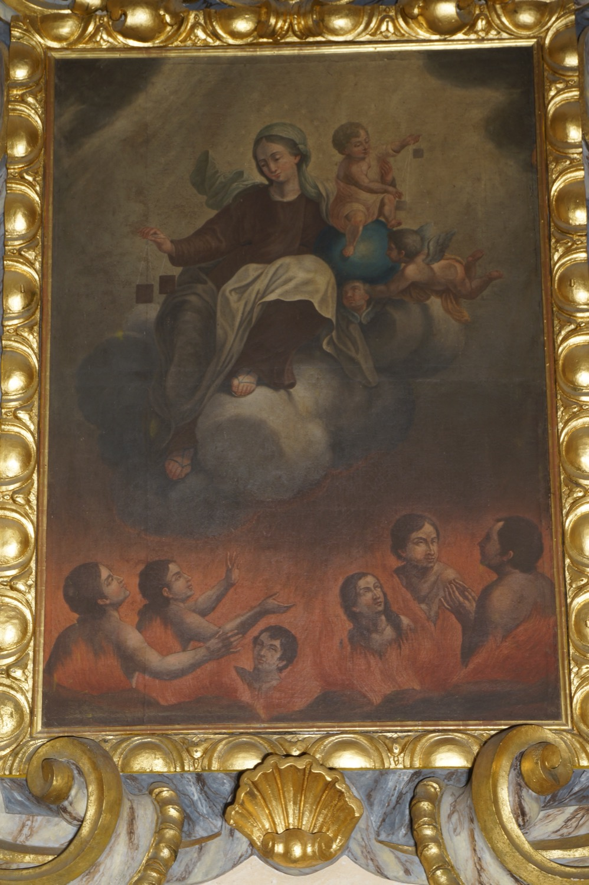

La Virgen del Carmen es una de las advocaciones de la Virgen María más antiguas y populares. Su nombre procede del monte Carmelo (situado cerca de Haifa, Israel), donde un grupo de ermitaños fundó en el siglo XII una comunidad religiosa y dedicó su iglesia a la Virgen María. De aquella comunidad surgió la Orden de los Hermanos de la Bienaventurada Virgen María del Monte Carmelo, también conocida como Orden del Carmen, cuyos miembros extendieron por Europa el culto a su patrona.
Esta pintura de la Virgen del Carmen sigue su iconografía habitual. La Virgen aparece vestida con el hábito carmelita, formado por túnica marrón y manto claro. Rodeados de ángeles, María y el Niño Jesús ofrecen escapularios a unas figuras humanas que sufren entre llamas y alzan la mirada hacia ella esperando ser salvadas. Por la presencia de estas figuras humanas entre llamas, esta capilla es también conocida como la capilla de las Ánimas.
La escena hace referencia a las dos apariciones que popularizaron la devoción a la Virgen del Carmen durante los siglos XIII y XIV. Según la tradición, en una aparición a san Simón Stock la Virgen le ofreció un escapulario y le prometió que quienes lo llevaran al morir se salvarían del fuego eterno. Más adelante, en una aparición al futuro papa Juan XXII, le prometió que cada sábado acudiría al purgatorio para rescatar las almas de quienes hubieran muerto llevando el escapulario.
La moldura de yeso en bajorrelieve de estilo rococó es obra del escultor italiano Antonio Soldati (s. XVIII). Es la única que se conserva de las cinco que esculpió para la iglesia de Vilafranca.